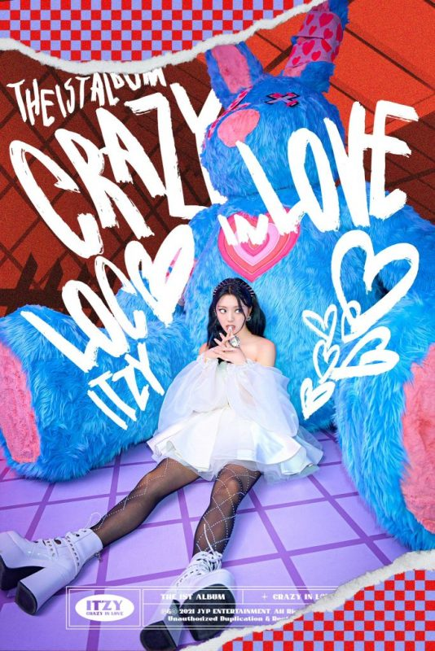

Yeji
Stage Name: Yeji (예지)
Birth Name: Hwang Ye Ji (황예지)
English Name: Lucy Hwang
Position: Leader, Main Dancer, Lead Vocalist, Sub Rapper
Birthday: May 26, 2000
Zodiac Sign: Gemini
Chinese Zodiac Sign: Dragon
Height: 167 cm (5’6’’)
Weight: 46 kg (101 lbs)
Blood Type: A
Nationality: Korean
Yeji facts:
Yeji’s hometown is Jeonju, South Korea.
She attended Jeonju Hwasan Elementary School (graduated), Jeonju Geunyoung Middle School (graduated) & Gyogyo Jeonju Commercial Information Reporting School (graduated)
She became a trainee in 2016, so she trained for 3 years.
She made a cameo at “Twenty Again” EP8 (2015).
Yeji is close to Wanna One’s Lee Daehwi.
She appeared in Stray Kids‘ Survival Show EP1 (2017).
Fans say she looks like Stray Kids‘ Hyunjin and also (G)I-DLE‘s Yuqi.
Yeji auditioned to JYP with “Like Ooh-Ahh” by Twice.
In the dorm, Yeji and Ryujin are roommates.
Yeji has a condition called ‘Atopy’ [Solo V-Live 20.01.24].
Favorite food: Snacks & chocolate.
Favorite color: Black.
She is the second tallest member.
Yeji has a puppy named Hongsam.
She ranked 86th on TC Candler’s 100 Most Beautiful Faces 2019.
RYUJIN
Stage Name: Ryujin (류진)
Birth Name: Shin Ryu Jin (신류진)
English Name: Joanne Shin
Position: Main Rapper, Lead Dancer, Sub Vocalist, Center
Birthday: April 17, 2001
Zodiac Sign: Aries
Chinese Zodiac Sign: Snake
Height: 164 cm (5’4’’)
Weight: 49 kg (108 lbs)
Blood Type: B
Nationality: Korean
Ryujin facts:
Ryujin’s hometown is Seoul, South Korea.
She attended Seoul Gwangnam Elementary School (graduated), Daejang Middle School (graduated), Gyeonggi Girls’ High School (transferred) & Hanlim Entertainment Arts High School (graduated)
She was a contestant on YG’s MIXNINE (Ranked #1).
Yang Hyun Suk offered her to join YG, but she decided to stay at JYP.
Ryujin is friends with Dreamcatcher’s Jiu and Elris’ Bella.
Ryujin has 2 Kitties “Byullie & Dallie”.
Ryujin’s favorite movie is “The Perks of Being a Wallflower”.
She was a trainee for 4 years.
Ryujin’s role model is Lee Hyori (Fin.K.L)
In the dorm, Ryujin and Yeji are roommates.
LIA
Stage Name: Lia (리아)
Birth Name: Choi Ji Su (최지수)
English Name: Julia Choi
Position: Main Vocalist, Sub Rapper
Birthday: July 21, 2000
Zodiac Sign: Cancer
Chinese Zodiac Sign: Dragon
Height: 162.3 cm (5 ft 3¾ in)
Weight: 43 kg (94 lbs)
Blood Type: AB
Nationality: Korean
Lia facts:
Lia’s hometown is Incheon, South Korea.
She attended Incheon Sinsong Elementary School (graduated), Shinsong Middle School (transferred), Northern College Eight School Jeju (transferred), Shinsong Middle School (graduated) & Seoul Performing Arts High School (SOPA / graduated)
She was a trainee for more than 2 years.
She attends an International School.
Lia is the newest JYP trainee to debut.
She is a former SM Ent. trainee.
She used to attend Seoul’s School of Performing Arts (SOPA).
She was in the department of Practical Music.
She received vocal training at Dream Vocal Academy.
She was born on the same day as Everglow‘s Aisha.
Her nicknames are Honey Lia, Cinnamon Lia and Ariana Grande.
She feels most comfortable with Chaeryeong.
Her stage name comes from ‘Julia’, her English name. Her aunt gave her that name.
She used to live in Canada.
She can speak English.
Chaeryeong
Stage Name: Chaeryeong (채령)
Birth Name: Lee Chae Ryeong (이채령)
English Name: Judy Lee
Position: Main Dancer, Sub Vocalist, Sub Rapper
Birthday: June 5, 2001
Zodiac Sign: Gemini
Chinese Zodiac Sign: Snake
Height: 166 cm (5’5″)
Weight: 46 kg (101 lbs)
Blood Type: B
Nationality: Korean
Chaeryeong facts:
Her hometown is Yongin, South Korea.
She attended Yongin Seocheon Elementary School (graduated), Yongin Seocheon Middle School (graduated) & Hanlim Entertainment Art High School (Musical major / graduated)
She’s IZ*ONE‘s Chaeyeon‘s sister. She also has a younger sister named Chaemin.
She became a trainee in 2014. She trained for 5 years.
Her nickname is “Chocolate Holic”.
Chaeryeong gets scared easily.
Chaeryeong, along with her sister Chaeyeon, auditioned for Fantagio in 2012, but didn’t make it.
She was a contestant on SIXTEEN when she was 14 (Ranked #12).
She was a contestant on Kpop Star 3 when she was 11.
Chaeryeong can compose music.
Her favourite song is “Because of You” by Ne-Yo.
Her favourite music genre is Ballad.
Her habit is touching her hair.
She is close friends with all the members of TWICE, Jeon Somi and Fromis_9‘s Jiwon.

Yuna
Stage Name: Yuna (유나)
Birth Name: Shin Yu Na (신유나)
English Name: Hussey Shin
Position: Lead Rapper, Lead Dancer, Sub Vocalist, Visual, Maknae
Birthday: December 9, 2003
Zodiac Sign: Sagittarius
Chinese Zodiac Sign: Goat
Height: 170 cm (5’7’’)
Weight: 46.8 kg (103 lbs)
Blood Type: A
Nationality: Korean
Yuna facts:
Yuna’s hometown is Suwon, South Korea.
She attended Suwon Hwayang Elementary School (graduated), Yeongbok Girls’ Middle School (graduated) & Hanlim Entertainment Arts High School (Practical Dance Department / student)
She appeared in BTS‘ Highlight Reels (She was Jungkook‘s pair) (2017).
Yuna graduated from middle school in December 2018.
Yuna used to wear braces.
Fans say she looks like PRISTIN‘s Kyulkyung.
She trained for 3 years.
In the dorm, Yuna and Lia are roommates.
Her favorite color is Pink.
Personality: Extroverted.
She’s the tallest member.
She used to play floorball for about 4 years.